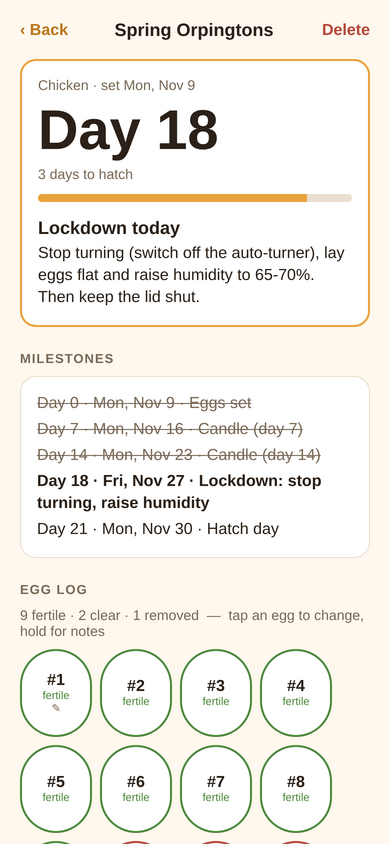

Hatch Day
Your incubator, day by day.
Hatch Day counts an incubator hatch down day by day, with reminders for turning, candling, lockdown and hatch day. Chickens, ducks, quail, geese, turkeys and more, or any species you add.
✓ Reminders on the right day, counted from your set date
✓ A plain-language card for every day
✓ Egg-by-egg log: fertile, clear, removed, hatched
✓ No ads, no account, your data stays on your phone
First hatch free. A one-time $2.99 unlock gives unlimited hatches and custom species.
